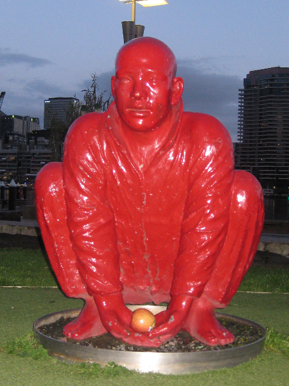

PLEASE HELP THESE MEN
The Red Men were unjustly ripped from their home by the Golden Bees of Southbank. They were flown from their home in a realm far from this one and shipped to the Docklands. They were once children of pure gold, but their stagnancy and atrophy has turned their skin to a glowing red. Their anger has manifested, they are trapped within themselves and forgotten who they are. The City trembles when the Red Men call. And their cries have been ignored for too long. Against their will, they are used to hold up the Docklands from sinking into the bog, but we believe something can be done.
On a dangerous journey into the heart of evil, beneath the metallic star, we uncovered the truth of Dr. Henry and his rule over the land many months ago. Since, we have been trying to understand the scope of Dr. Henry’s rule and how we can stop him from consuming this city. He knows now of our presence. Through the floods, we ventured into the place where they have been artificially arranged. They were hungry, so we fed them a meal cooked from the heart; from ingredients found in the dumpster at Preston Woolworths. Dr. Henry was watching on through drone piloted by one of his goons. Once we banished the drone, the seagulls were sent in. Dr. Henry thought they would stop us. But they were distracted by the meal prepared for the men.
Now the artificial red skin cracks, and their golden interior can be seen. They remember now fragments of who they were. But this is only the beginning. While they have agreed to lift the tower and throw it into the river, they act only with a fraction of their selves. There is much to be done, and we need your help. If you understand the scope of what must be done, please find us at HQ. If you truly know what must be done, you will look inward and find us at HQ.
Act quickly, DR. Henry knows of our existence and is working quickly to take hold of this city.